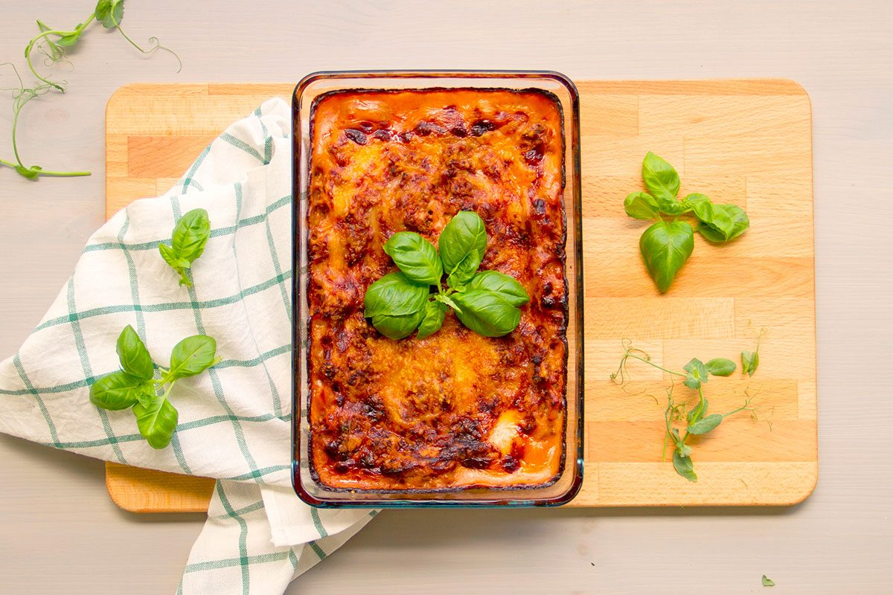

Lasagne recept

Klassisk lasagne är väl en rätt man aldrig tröttnar på? Med det här receptet blir din lasagne perfekt med en mjuk och härlig konsistens och dessutom har den en ljuv och exemplarisk smak. Parmesanosten är pricken över i!
Ingredienser:
- 2 gula lökar
- 2 vitlöksklyftor
- 500 g nötfärs
- 1 msk olja
- 4 msk tomatpuré
- 1 tsk timjan
- 1 tsk rosmarin
- 500 g krossade tomater
- 1 köttbuljongtärning
- salt och peppar
- 9 lasagneplattor
Sås
- 6 msk matfett
- 6 msk vetemjöl
- 1 l mjölk
- salt och peppar
- 2 dl riven parmesan
Gör så här:
- Sätt ugnen på 175°C.
- Skala och hacka lök och vitlök. Fräs färs, lök och vitlök i oljan i en stekpanna. Tillsätt tomatpuré som får fräsa med i färsen. Krydda med timjan och rosmarin. Tillsätt krossade tomater och buljongtärning låt det koka ca 10 minuter. Smaka av med salt och peppar.
- Sås: Smält matfettet och rör ner mjölet. Späd med mjölken under vispning. Låt såsen koka ca 5 minuter. Smaka av med salt och peppar.
- Varva sås, lasagneplattor och köttfärssåsen i en ugnssäker form. Avsluta med sås och parmesanost.
- Sätt in lasagnen mitt i ugnen ca 40 minuter.